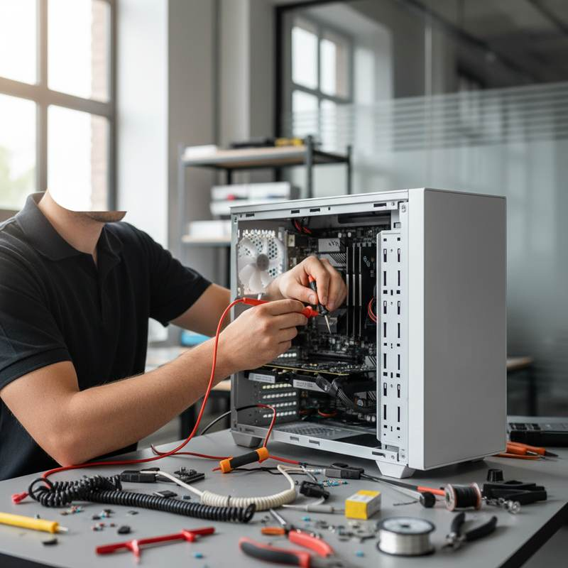
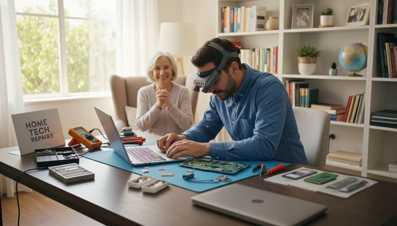
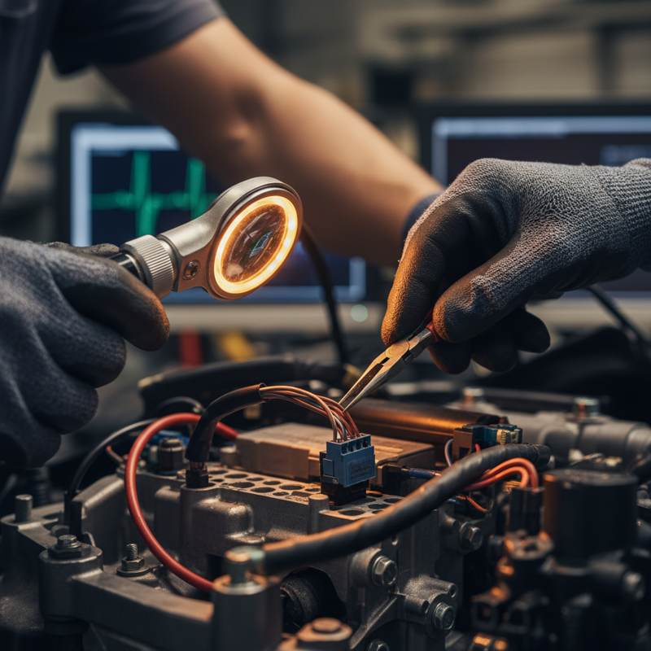

Understanding Computer Repair Services
In today’s digital age, computers have become an integral part of our lives. However, when they malfunction, the myths surrounding computer repair services can lead to confusion and hesitation. Let's debunk some common misconceptions and provide clarity on what to expect from professional computer repair services.

Myth 1: DIY Fixes Are Just as Good
One of the most prevalent myths is that do-it-yourself (DIY) repairs can resolve any computer issue. While there are many online tutorials and guides available, not all are reliable or applicable to your specific problem. Attempting a DIY fix without proper knowledge can sometimes worsen the issue, leading to more costly repairs.
Professional technicians have the expertise and tools to diagnose and fix problems efficiently. They can also help in identifying underlying issues that may not be apparent to an untrained eye.
Myth 2: Computer Repair Is Always Expensive
Another common belief is that computer repair services are always costly. In reality, the cost of repair can vary greatly depending on the nature of the problem and the parts needed. Many repair services offer competitive pricing and free diagnostics to help you understand the issue before committing to any costs.

Additionally, regular maintenance and timely repairs can prevent more significant issues and expenses in the future, making professional services a cost-effective choice.
Myth 3: Data Is Always Lost During Repairs
Many people fear that their data will be lost during the repair process. While there is always a risk, professional technicians take measures to safeguard your data. It's crucial to communicate your concerns about data with your technician beforehand.
Moreover, it's a best practice to back up your data regularly, ensuring that you have a copy of your important files should anything unexpected occur.
Myth 4: All Technicians Are the Same
People often assume that all computer repair technicians offer the same level of service, but this is far from true. The quality of service can vary significantly between providers. It's essential to choose a reputable service with certified technicians who have experience with your specific computer model or issue.

Look for reviews, ask for recommendations, and check the technician's credentials to ensure that you are entrusting your device to a skilled professional.
Conclusion
Understanding the realities of computer repair services can save you time, money, and stress. By debunking these myths, you can make informed decisions and ensure that your computer is in good hands when issues arise. Remember, professional help is often the most reliable and efficient solution for maintaining your computer’s health.